Chapter 2 EDA
El Análisis Exploratorio de Datos (EDA) se realiza con el objetivo de comprender la estructura y el comportamiento de los indicadores del mercado laboral en Colombia antes de aplicar análisis más avanzados. A través de herramientas como histogramas, diagramas de caja, gráficos de dispersión y matrices de correlación, se busca identificar la distribución de las variables, detectar valores atípicos y analizar las relaciones entre la tasa de desempleo nacional (variable objetivo) y otros indicadores como la tasa de ocupación y la tasa global de participación, permitiendo obtener una primera comprensión de la dinámica del mercado laboral en el período analizado.
- Se hace una carga de los datos:
library(readxl)
MLC <- read_excel("C:/Users/boolean/Downloads/MLC.xlsx",
sheet = "Series de datos", col_types = c("date",
"numeric", "numeric", "numeric",
"numeric", "numeric", "numeric"))
head(MLC)## # A tibble: 6 × 7
## fecha tasa_global_participacion_area tasa_global_participacion…¹ tasa_desempleo_area
## <dttm> <dbl> <dbl> <dbl>
## 1 2001-01-31 00:00:00 70.0 69.1 20.7
## 2 2001-02-28 00:00:00 70.2 68.9 19.6
## 3 2001-03-31 00:00:00 69.1 68.4 19.1
## 4 2001-04-30 00:00:00 67.7 65.2 17.6
## 5 2001-05-31 00:00:00 68.1 65.4 17.8
## 6 2001-06-30 00:00:00 68.7 66.3 18.7
## # ℹ abbreviated name: ¹tasa_global_participacion_nacional
## # ℹ 3 more variables: tasa_desempleo_nacional <dbl>, tasa_ocupacion_area <dbl>,
## # tasa_ocupacion_nacional <dbl>Se realiza una inspección inicial de los datos del dataset:
## [1] "fecha" "tasa_global_participacion_area"
## [3] "tasa_global_participacion_nacional" "tasa_desempleo_area"
## [5] "tasa_desempleo_nacional" "tasa_ocupacion_area"
## [7] "tasa_ocupacion_nacional"## tibble [300 × 7] (S3: tbl_df/tbl/data.frame)
## $ fecha : POSIXct[1:300], format: "2001-01-31" "2001-02-28" "2001-03-31" ...
## $ tasa_global_participacion_area : num [1:300] 70 70.2 69.1 67.7 68.1 ...
## $ tasa_global_participacion_nacional: num [1:300] 69.1 68.9 68.4 65.2 65.4 ...
## $ tasa_desempleo_area : num [1:300] 20.7 19.6 19.1 17.6 17.8 ...
## $ tasa_desempleo_nacional : num [1:300] 16.6 17.4 15.8 14.5 14 ...
## $ tasa_ocupacion_area : num [1:300] 55.5 56.5 55.9 55.8 56 ...
## $ tasa_ocupacion_nacional : num [1:300] 57.6 56.9 57.6 55.8 56.2 ...## [1] 300 7## fecha tasa_global_participacion_area tasa_global_participacion_nacional
## Min. :2001-01-31 00:00:00 Min. :55.09 Min. :53.45
## 1st Qu.:2007-04-22 12:00:00 1st Qu.:66.57 1st Qu.:64.09
## Median :2013-07-15 12:00:00 Median :67.95 Median :66.14
## Mean :2013-07-15 18:38:24 Mean :67.76 Mean :65.74
## 3rd Qu.:2019-10-07 18:00:00 3rd Qu.:69.47 3rd Qu.:67.48
## Max. :2025-12-31 00:00:00 Max. :72.15 Max. :70.62
## tasa_desempleo_area tasa_desempleo_nacional tasa_ocupacion_area tasa_ocupacion_nacional
## Min. : 7.27 Min. : 7.020 Min. :41.66 Min. :42.50
## 1st Qu.:10.45 1st Qu.: 9.735 1st Qu.:57.71 1st Qu.:56.84
## Median :11.73 Median :11.193 Median :59.59 Median :58.31
## Mean :12.63 Mean :11.612 Mean :59.22 Mean :58.12
## 3rd Qu.:14.02 3rd Qu.:12.909 3rd Qu.:61.13 3rd Qu.:59.96
## Max. :25.79 Max. :21.972 Max. :64.61 Max. :64.01Verificamos que no hayan datos faltantes ni casillas vacias:
## fecha tasa_global_participacion_area
## 0 0
## tasa_global_participacion_nacional tasa_desempleo_area
## 0 0
## tasa_desempleo_nacional tasa_ocupacion_area
## 0 0
## tasa_ocupacion_nacional
## 0En efecto, no encontramos ningún NA. Esto nos facilita el trabajar con los datos que la limpieza no debe ser tan rigurosa. Otra forma de verlo sería:
## Warning: Unknown or uninitialised column: `arguments`.
## Unknown or uninitialised column: `arguments`.## Warning: Unknown or uninitialised column: `imputations`.
2.0.1 Analisis de la variable tasa_desempleo_nacional.
Consideremos el resumen de tasa_desempleo_nacional (objetivo):
MLC %>%
summarise(
n = length(tasa_desempleo_nacional),
media = mean(tasa_desempleo_nacional),
ds = sd(tasa_desempleo_nacional),
mediana = median(tasa_desempleo_nacional),
minimo = min(tasa_desempleo_nacional),
maximo = max(tasa_desempleo_nacional),
Q1 = quantile(tasa_desempleo_nacional, 0.25),
Q3 = quantile(tasa_desempleo_nacional, 0.75),
IQR = IQR(tasa_desempleo_nacional)
)## # A tibble: 1 × 9
## n media ds mediana minimo maximo Q1 Q3 IQR
## <int> <dbl> <dbl> <dbl> <dbl> <dbl> <dbl> <dbl> <dbl>
## 1 300 11.6 2.45 11.2 7.02 22.0 9.74 12.9 3.17La variable tasa_desempleo_nacional fue analizada a partir de 300 observaciones. Se obtuvo una media de 11.61247 que se refleja como la tasa de desempleo nacional que se refleja como porcentaje, donde la mitad de la muestra se encuentr por debajo de 11.19275. El minimo registrado fue de 7.02, lo que indica que en una fecha en especifico se presentó una tasa de desempleo menor a la media. Por su parte el maximo fue de 21.972, lo cual refleja una tasa de desempleo alta en una fecha en especifico.
- Con el fin de analizar la distribución de la variable tasa de desempleo nacional, se construye un histograma. Este grafico permite visualizar la concentración de los valores, identifica posibles asimetrías en la distribución, ayuda fundamentalmente para caracterizar la variable antes de estudiar sus relaciones con otros indicadores del mercado laboral.
library(ggplot2)
media_des <- mean(MLC$tasa_desempleo_nacional, na.rm = TRUE)
mediana_des <- median(MLC$tasa_desempleo_nacional, na.rm = TRUE)
ggplot(MLC, aes(x = tasa_desempleo_nacional)) +
geom_histogram(
aes(y = ..density..),
bins = 30,
fill = "skyblue",
color = "black",
alpha = 0.7
) +
geom_density(
color = "red",
linewidth = 1.2
) +
geom_vline(
xintercept = media_des,
color = "blue",
linetype = "dashed",
linewidth = 1
) +
geom_vline(
xintercept = mediana_des,
color = "darkgreen",
linetype = "dashed",
linewidth = 1
) +
labs(
title = "Distribución de la Tasa de Desempleo Nacional en Colombia",
subtitle = "Histograma con densidad, media y mediana",
x = "Tasa de desempleo nacional (%)",
y = "Densidad"
) +
theme_minimal()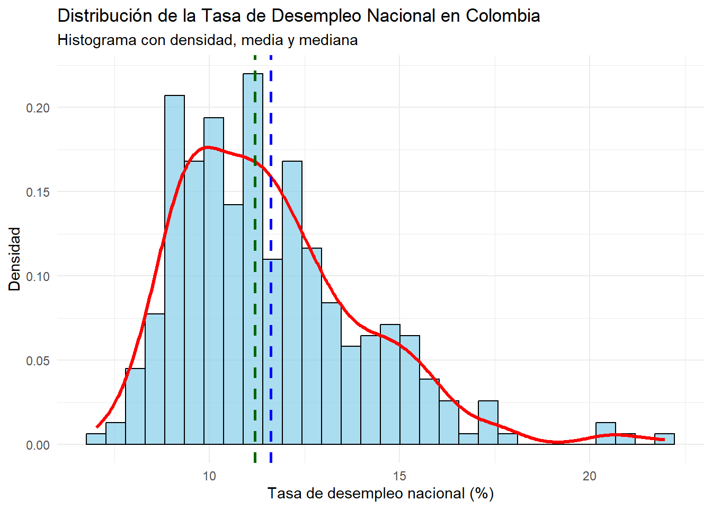
El histograma presenta la distribución de frecuencias de la tasa de desempleo nacional. En el eje horizontal se ubican los intervalos de la variable (10, 15 y 20), mientras que el eje vertical muestra la frecuencia de observaciones en cada rango, con un máximo de 20.
La altura de las barras permite identificar la concentración de los datos. Si las frecuencias más altas se encuentran en los intervalos inferiores (cercanos a 10), predominan tasas de desempleo bajas. Por el contrario, si se concentran en valores superiores (cercanos a 20), predominan tasas altas. Este análisis visual facilita la comprensión del comportamiento del desempleo en el período estudiado y constituye una base descriptiva fundamental para estudios económicos y sociales.
- Para complementar el análisis del histograma, se construye un boxplot. Este tipo de visualización resume la distribución de la variable mediante sus cuantiles, analizar su dispersion de los datos a traves del rango intercuartílico y además facilita la detección de valores atípicos.- Realicemos un grafico de caja y bigote:
ggplot(MLC, aes(y = tasa_desempleo_nacional)) +
geom_boxplot(
fill = "skyblue",
color = "black",
width = 0.3,
outlier.color = "red",
outlier.size = 2
) +
labs(
title = "Diagrama de Caja y Bigotes",
subtitle = "Tasa de Desempleo Nacional en Colombia",
y = "Tasa de desempleo nacional (%)",
x = ""
) +
theme_minimal()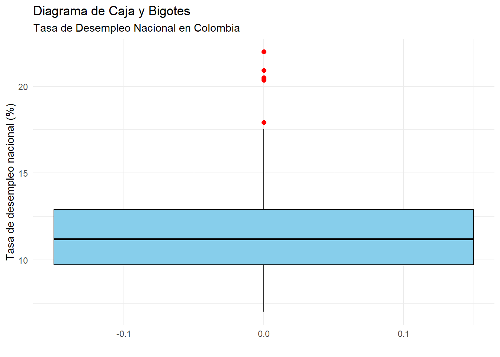
Se identifican tres puntos rojos fuera de este rango, lo que indica la presencia de valores atípicos o outliers: uno en el 20%, dos en el 15% y uno en el 10%. Estos valores se desvían del comportamiento general de la serie, posiblemente reflejando periodos con condiciones económicas excepcionales, como crisis o recuperaciones atípicas. Se reflejan unos outliers, pero al ser el dataset economico se mantendrá por ahora.
- Una vez analizada la distribución de las variables mediante histogramas y detectados posibles valores atípicos con boxplot, se emplea el gráfico de dispersión con el fin de visualizar cada observación individualmente. Este tipo de gráfico permite confirmar la presencia de outliers, identificar patrones en los datos y complementar el análisis exploratorio previo.
Q1 <- quantile(MLC$tasa_desempleo_nacional, 0.25, na.rm = TRUE)
Q3 <- quantile(MLC$tasa_desempleo_nacional, 0.75, na.rm = TRUE)
IQR_val <- IQR(MLC$tasa_desempleo_nacional, na.rm = TRUE)
lim_inf <- Q1 - 1.5 * IQR_val
lim_sup <- Q3 + 1.5 * IQR_val
outliers <- MLC$tasa_desempleo_nacional < lim_inf | MLC$tasa_desempleo_nacional > lim_sup
plot(MLC$fecha, MLC$tasa_desempleo_nacional,
main = "Dispersión de la tasa de desempleo nacional",
xlab = "Fecha",
ylab = "Tasa de desempleo (%)",
pch = 16)
points(MLC$fecha[outliers],
MLC$tasa_desempleo_nacional[outliers],
col = "red",
pch = 16,
cex = 1.4)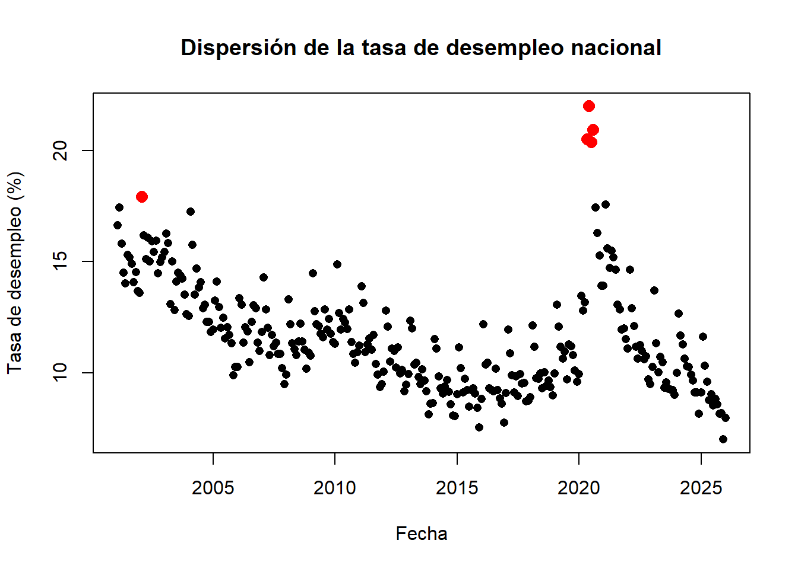
El gráfico de dispersión muestra la evolución temporal de la tasa de desempleo nacional entre 2001 y 2025. La mayoría de los valores se concentran entre 8% y 14%, lo que indica un comportamiento relativamente estable durante gran parte del período.
No obstante, se identifican valores atípicos, especialmente alrededor del año 2020, donde el desempleo supera el 20%, reflejando un choque significativo en el mercado laboral asociado al impacto económico de la pandemia de COVID-19. Estos puntos no representan errores en los datos, sino eventos económicos extraordinarios que afectaron temporalmente la dinámica del empleo en el país.
2.0.2 Analisis de las variables caracteristicas:
MLC %>%
summarise(
n = length(tasa_global_participacion_area),
media = mean(tasa_global_participacion_area),
ds = sd(tasa_global_participacion_area),
mediana = median(tasa_global_participacion_area),
minimo = min(tasa_global_participacion_area),
maximo = max(tasa_global_participacion_area),
Q1 = quantile(tasa_global_participacion_area, 0.25),
Q3 = quantile(tasa_global_participacion_area, 0.75),
IQR = IQR(tasa_global_participacion_area)) %>%
mutate(variable = "tasa_global_participacion_area") -> var_num_tgpa
MLC %>%
summarise(
n = length(tasa_global_participacion_nacional),
media = mean(tasa_global_participacion_nacional),
ds = sd(tasa_global_participacion_nacional),
mediana = median(tasa_global_participacion_nacional),
minimo = min(tasa_global_participacion_nacional),
maximo = max(tasa_global_participacion_nacional),
Q1 = quantile(tasa_global_participacion_nacional, 0.25),
Q3 = quantile(tasa_global_participacion_nacional, 0.75),
IQR = IQR(tasa_global_participacion_nacional)) %>%
mutate(variable = "tasa_global_participacion_nacional") -> var_num_tgpn
MLC %>%
summarise(
n = length(tasa_desempleo_area),
media = mean(tasa_desempleo_area),
ds = sd(tasa_desempleo_area),
mediana = median(tasa_desempleo_area),
minimo = min(tasa_desempleo_area),
maximo = max(tasa_desempleo_area),
Q1 = quantile(tasa_desempleo_area, 0.25),
Q3 = quantile(tasa_desempleo_area, 0.75),
IQR = IQR(tasa_desempleo_area)) %>%
mutate(variable = "tasa_desempleo_area")-> var_num_tsa
MLC %>%
summarise(
n = length(tasa_ocupacion_area),
media = mean(tasa_ocupacion_area),
ds = sd(tasa_ocupacion_area),
mediana = median(tasa_ocupacion_area),
minimo = min(tasa_ocupacion_area),
maximo = max(tasa_ocupacion_area),
Q1 = quantile(tasa_ocupacion_area, 0.25),
Q3 = quantile(tasa_ocupacion_area, 0.75),
IQR = IQR(tasa_ocupacion_area)) %>%
mutate(variable = "tasa_ocupacion_area") -> var_num_toa
MLC %>%
summarise(
n = length(tasa_ocupacion_nacional),
media = mean(tasa_ocupacion_nacional),
ds = sd(tasa_ocupacion_nacional),
mediana = median(tasa_ocupacion_nacional),
minimo = min(tasa_ocupacion_nacional),
maximo = max(tasa_ocupacion_nacional),
Q1 = quantile(tasa_ocupacion_nacional, 0.25),
Q3 = quantile(tasa_ocupacion_nacional, 0.75),
IQR = IQR(tasa_ocupacion_nacional)) %>%
mutate(variable = "tasa_ocupacion_nacional") -> var_num_ton
bind_rows(var_num_tgpa, var_num_tgpn, var_num_tsa, var_num_toa, var_num_ton ) %>%
select(variable, everything())## # A tibble: 5 × 10
## variable n media ds mediana minimo maximo Q1 Q3 IQR
## <chr> <int> <dbl> <dbl> <dbl> <dbl> <dbl> <dbl> <dbl> <dbl>
## 1 tasa_global_participacion_area 300 67.8 2.22 68.0 55.1 72.1 66.6 69.5 2.90
## 2 tasa_global_participacion_nacional 300 65.7 2.35 66.1 53.4 70.6 64.1 67.5 3.40
## 3 tasa_desempleo_area 300 12.6 3.15 11.7 7.27 25.8 10.4 14.0 3.57
## 4 tasa_ocupacion_area 300 59.2 3.10 59.6 41.7 64.6 57.7 61.1 3.42
## 5 tasa_ocupacion_nacional 300 58.1 2.85 58.3 42.5 64.0 56.8 60.0 3.12MLC_long <- MLC %>%
select(
tasa_global_participacion_area,
tasa_global_participacion_nacional,
tasa_desempleo_area,
tasa_ocupacion_area,
tasa_ocupacion_nacional
) %>%
pivot_longer(
cols = everything(),
names_to = "variable",
values_to = "valor"
)
ggplot(MLC_long, aes(y = valor)) +
geom_boxplot(
fill = "skyblue",
color = "black",
outlier.color = "red"
) +
facet_wrap(~variable, scales = "free") +
labs(
title = "Diagramas de Caja por Indicador del Mercado Laboral",
y = "Valor (%)",
x = ""
) +
theme_minimal()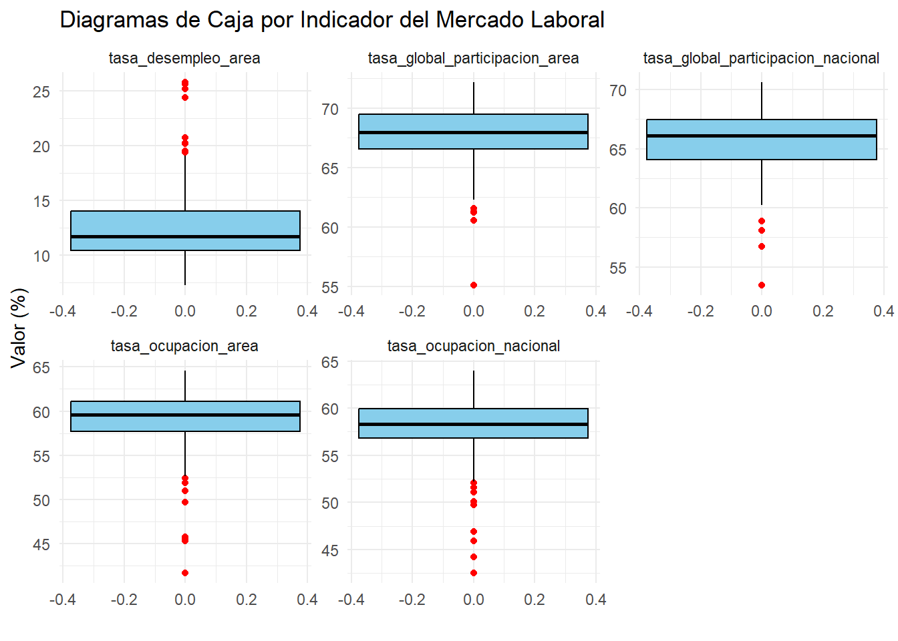
Al analizar los boxplots presentados, observamos que la tasa de desempleo a nivel de área es el indicador con mayor variabilidad y valores más extremos, con una mediana cercana al 10% y un rango que se extiende hasta cerca del 20%, lo que refleja disparidades significativas en el desempleo local. En contraste, los indicadores de tasa de ocupación y tasa global de participación, tanto a nivel de área como nacional, presentan medianas centradas en cero y una dispersión mucho más contenida. Destaca especialmente que las versiones nacionales de estos indicadores muestran cajas más estrechas y bigotes más cortos que sus contrapartes de área, lo que sugiere que, a escala nacional, el mercado laboral tiende a ser más estable y homogéneo, mientras que a nivel local se experimentan fluctuaciones más pronunciadas y contextos laborales más diversos.
2.0.3 Analisis bivariado.
Después de analizar cada variable de forma individual y de explorar algunas relaciones mediante gráficos de dispersion, resulta util complementar con una matriz de correlación que ayudará a evaluar de manera conjunta la fuerza y la dirección de la relación lineal entre los indicadores del mercado laboral. Va a permitir detectar relaciones positivas o negativas entre los indicadores, lo cuan aporta una vision mas clara de la interacción entre las variables.
library(dplyr)
library(corrplot)
MLC_corr <- MLC %>%
select(
tasa_global_participacion_area,
tasa_global_participacion_nacional,
tasa_desempleo_area,
tasa_desempleo_nacional,
tasa_ocupacion_area,
tasa_ocupacion_nacional
)
matriz_cor <- cor(MLC_corr,
use = "complete.obs",
method = "pearson")
corrplot(
matriz_cor,
method = "color",
type = "upper",
addCoef.col = "black",
tl.col = "black",
tl.srt = 45,
number.cex = 0.7
)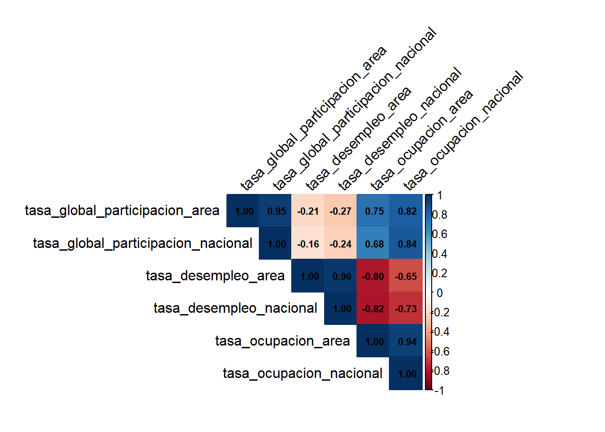
Al examinar la matriz de correlaciones, se identifican relaciones clave en el mercado laboral. Destaca una alta correlación positiva entre las tasas de desempleo de área y nacional (0.96), así como entre las tasas de ocupación de ambos niveles (0.94), lo que indica que los comportamientos locales y nacionales tienden a moverse de manera sincronizada. Asimismo, la participación global muestra una fuerte consistencia entre el área y la nación (0.95). Por otro lado, se observa una correlación negativa significativa entre la tasa de desempleo y la tasa de ocupación (aproximadamente -0.80 en ambos niveles), lo que refleja la relación inversa esperada: a mayor desempleo, menor ocupación. Finalmente, la participación global presenta una correlación moderada a alta con la ocupación (alrededor de 0.80), sugiriendo que una mayor participación en el mercado laboral se asocia con mayores niveles de ocupación, aunque su relación con el desempleo es débil y negativa.
Tomemos las variables en el grafico de dispersion como:
- Tasa de ocupacion nacional (TON)
- Tasa de desempleo nacional (TDN)
- Tasa global de participación nacional (TGPN)
- Tasa de desempleo area (TDA)
library(ggplot2)
library(patchwork)
g1 <- ggplot(MLC,
aes(x = tasa_ocupacion_nacional,
y = tasa_desempleo_nacional)) +
geom_point(color = "steelblue", alpha = 0.6) +
geom_smooth(method = "lm", se = FALSE, color = "red") +
labs(
title = "Desempleo vs Ocupación Nacional",
x = "TON",
y = "TDN"
) +
theme_minimal()
g2 <- ggplot(MLC,
aes(x = tasa_global_participacion_nacional,
y = tasa_desempleo_nacional)) +
geom_point(color = "darkgreen", alpha = 0.6) +
geom_smooth(method = "lm", se = FALSE, color = "red") +
labs(
title = "Desempleo vs Participación Nacional",
x = "TGPN",
y = "TDN"
) +
theme_minimal()
g3 <- ggplot(MLC,
aes(x = tasa_desempleo_area,
y = tasa_desempleo_nacional)) +
geom_point(color = "purple", alpha = 0.6) +
geom_smooth(method = "lm", se = FALSE, color = "red") +
labs(
title = "Desempleo Área vs Nacional",
x = "TDA",
y = "TDN"
) +
theme_minimal()
g1 / g2 / g3## `geom_smooth()` using formula = 'y ~ x'
## `geom_smooth()` using formula = 'y ~ x'
## `geom_smooth()` using formula = 'y ~ x'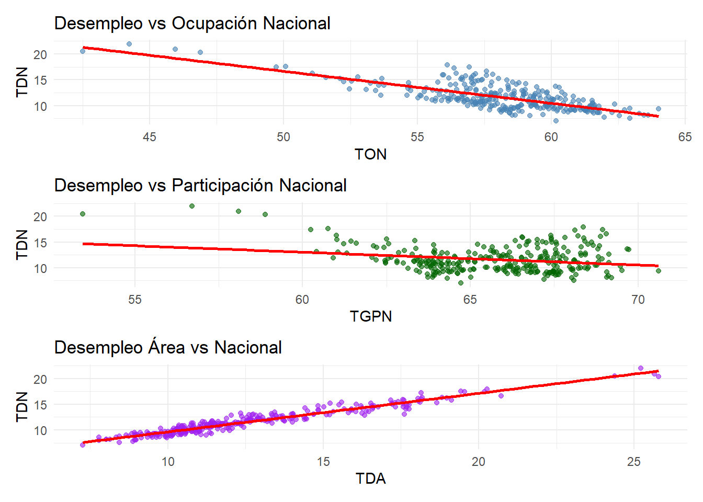
Al analizar las relaciones gráficas entre los indicadores del mercado laboral, se observan patrones claros y consistentes con la teoría económica. En el primer gráfico, Desempleo vs Ocupación Nacional, se aprecia una clara relación inversa: a medida que aumenta la tasa de ocupación (TON), la tasa de desempleo nacional (TDN) tiende a disminuir, con puntos que oscilan entre aproximadamente 45% y 65% de ocupación y desempleo que va del 20% a valores cercanos a cero. En el segundo gráfico, Desempleo vs Participación Nacional, la relación es menos pronunciada pero también negativa: cuando la participación global (TGPN) aumenta —ubicándose entre 55% y 70%—, el desempleo tiende a reducirse, aunque con mayor dispersión. Finalmente, el gráfico Desempleo Área vs Nacional confirma una fuerte correlación positiva, donde los puntos se alinean casi perfectamente en una tendencia lineal ascendente, indicando que el comportamiento del desempleo a nivel local replica fielmente el comportamiento nacional.
- Dado que los datos corresponden a observaciones mensuales a lo largo del tiempo, es importante analizar el comportamiento de la variable objetivo desde una perspectiva temporal. Un gráfico de evolución temporal permite visualizar tendencias, cambios estructurales y posibles periodos de incremento o disminución del desempleo a lo largo del período de estudio. Vamos a analizar la variable objetivo respecto a la ocupación donde se refleja:
1. Cuando ocupación sube → desempleo baja.
2. Comportamiento inverso del mercado laboral.
library(ggplot2)
library(dplyr)
library(tidyr)
MLC_long <- MLC %>%
select(fecha, tasa_desempleo_nacional, tasa_ocupacion_nacional) %>%
pivot_longer(-fecha, names_to = "Indicador", values_to = "valor") %>%
mutate(Indicador = recode(Indicador,
"tasa_desempleo_nacional" = "Desempleo",
"tasa_ocupacion_nacional" = "Ocupación"
))
etiquetas <- MLC_long %>%
group_by(Indicador) %>%
slice_max(fecha, n = 1)
ggplot(MLC_long, aes(x = fecha, y = valor, color = Indicador)) +
geom_line(linewidth = 0.65) +
annotate("rect",
xmin = as.Date("2020-01-01"), xmax = as.Date("2021-06-01"),
ymin = -Inf, ymax = Inf, fill = "grey70", alpha = 0.15
) +
annotate("text",
x = as.Date("2020-09-01"), y = 67,
label = "COVID-19", size = 3, color = "grey45"
) +
geom_text(
data = etiquetas,
aes(label = Indicador),
hjust = -0.1, size = 3.2, fontface = "bold"
) +
scale_color_manual(values = c("Desempleo" = "#3876c4", "Ocupación" = "#d03a3a")) +
scale_y_continuous(limits = c(0, 70), breaks = seq(0, 70, 10)) +
scale_x_date(
date_breaks = "4 years",
date_labels = "%Y",
expand = expansion(mult = c(0.01, 0.12))
) +
labs(
title = "Evolución Temporal: Desempleo vs Ocupación Nacional",
x = "Fecha", y = "Tasa (%)"
) +
theme_minimal(base_size = 12) +
theme(
plot.title = element_text(hjust = 0.5, size = 13),
legend.position = "none",
panel.grid.minor = element_blank(),
panel.grid.major = element_line(color = "grey92")
)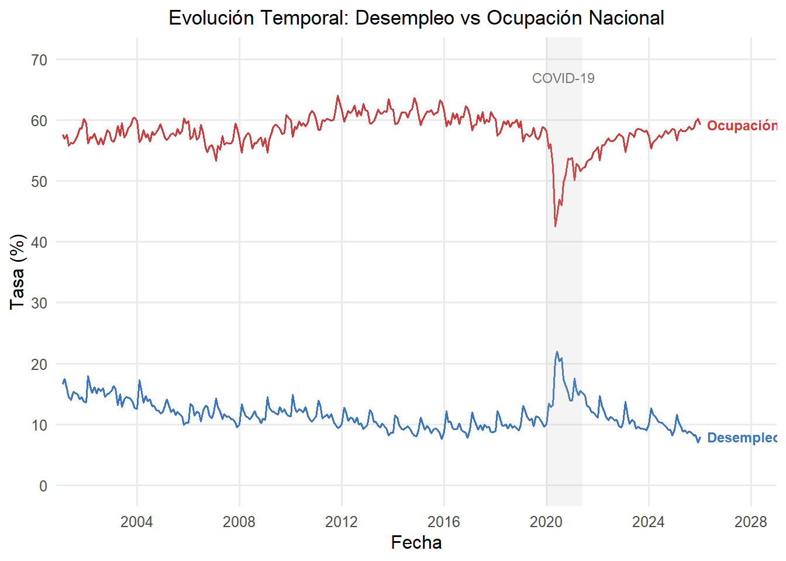
Al observar la evolución temporal del mercado laboral nacional entre los años 2000 y 2025, se identifican dinámicas inversas y claramente definidas entre el desempleo y la ocupación. La tasa de desempleo nacional (línea azul) muestra picos pronunciados en periodos de crisis especialmente alrededor de 2010 y nuevamente cerca de 2020, coincidiendo con caídas simultáneas en la tasa de ocupación nacional (línea roja), lo que refleja la sensibilidad del empleo ante choques económicos. En contraste, en los periodos de recuperación, la ocupación aumenta mientras el desempleo desciende, manteniendo consistentemente la relación inversa esperada entre ambos indicadores. Esta gráfica valida visualmente la correlación negativa observada en análisis anteriores y permite identificar con claridad los momentos de mayor tensión en el mercado laboral a lo largo de las últimas dos décadas.
library(lubridate)
MLC %>%
select(fecha, tasa_desempleo_nacional) %>%
mutate(anio = factor(year(fecha))) %>%
ggplot(aes(x = anio, y = tasa_desempleo_nacional)) +
geom_boxplot(
fill = "#3876c4", color = "#3876c4",
alpha = 0.25, outlier.size = 1.2, outlier.alpha = 0.5,
linewidth = 0.45, width = 0.55
) +
stat_summary(
fun = median, geom = "line", aes(group = 1),
color = "#3876c4", linewidth = 0.8, linetype = "dashed"
) +
scale_y_continuous(
limits = c(7, 23),
breaks = seq(8, 22, by = 2)
) +
labs(
title = "Desempleo — distribución anual",
subtitle = "Línea punteada = mediana anual",
x = "Año", y = "Tasa (%)"
) +
theme_minimal(base_size = 11) +
theme(
plot.title = element_text(hjust = 0.5, size = 12, color = "#3876c4"),
plot.subtitle = element_text(hjust = 0.5, size = 9, color = "grey55"),
axis.text.x = element_text(angle = 45, hjust = 1, size = 9),
panel.grid.minor = element_blank(),
panel.grid.major.x = element_blank()
)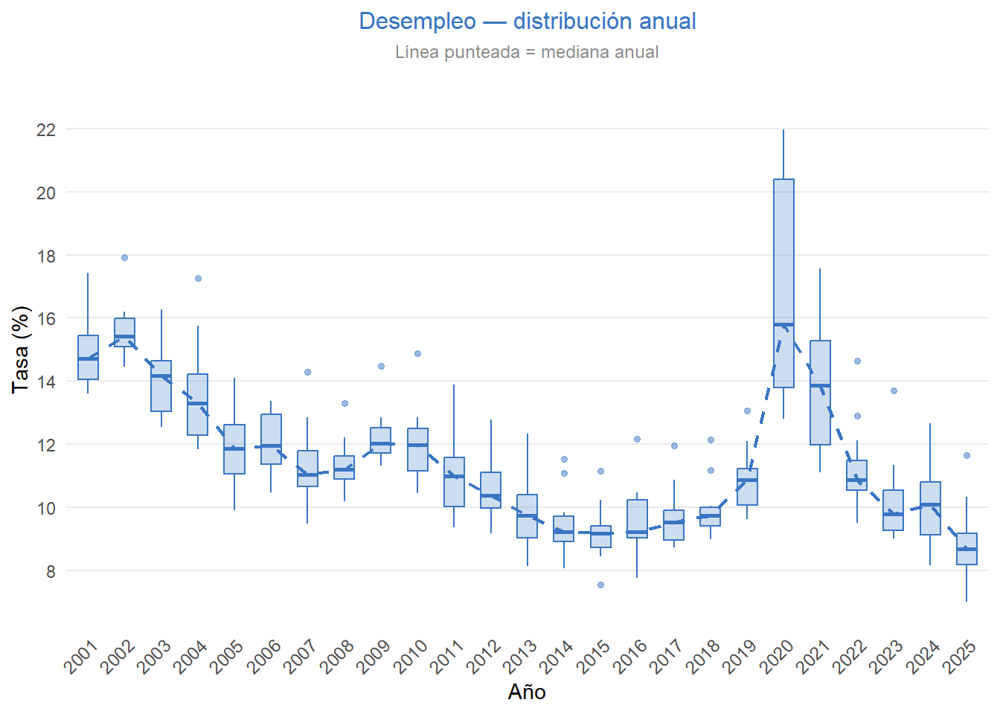
MLC %>%
select(fecha, tasa_ocupacion_nacional) %>%
mutate(anio = factor(year(fecha))) %>%
ggplot(aes(x = anio, y = tasa_ocupacion_nacional)) +
geom_boxplot(
fill = "#d03a3a", color = "#d03a3a",
alpha = 0.25, outlier.size = 1.2, outlier.alpha = 0.5,
linewidth = 0.45, width = 0.55
) +
stat_summary(
fun = median, geom = "line", aes(group = 1),
color = "#d03a3a", linewidth = 0.8, linetype = "dashed"
) +
scale_y_continuous(
limits = c(40, 66),
breaks = seq(40, 65, by = 5)
) +
labs(
title = "Ocupación — distribución anual",
subtitle = "Línea punteada = mediana anual",
x = "Año", y = "Tasa (%)"
) +
theme_minimal(base_size = 11) +
theme(
plot.title = element_text(hjust = 0.5, size = 12, color = "#d03a3a"),
plot.subtitle = element_text(hjust = 0.5, size = 9, color = "grey55"),
axis.text.x = element_text(angle = 45, hjust = 1, size = 9),
panel.grid.minor = element_blank(),
panel.grid.major.x = element_blank()
)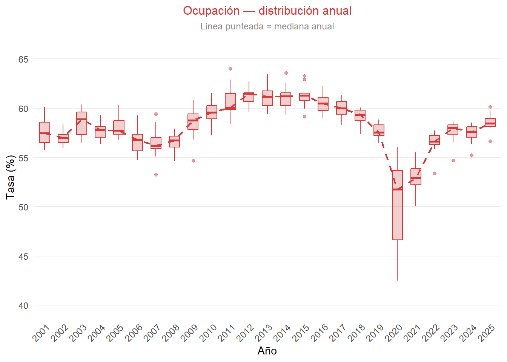
Al observar los gráficos en conjunto (teniendo en cuenta la evolución temporal), cuentan que el mercado laboral es dinamico, lejos de ser estacionario. A largo plazo, se notan tendencias claras, como la mejora progresiva en la ocupación hasta 2015 acompañada de unas variaciones estacionales que suceden todos los años que se refleja en el tamaño de las cajas. Sin embargo, el quiebre o choque economico se nota en el año 2020. La pandemia no solo hundió bruscamente los indicadores, sino que generó un nivel de volatilidad alto, ensanchando las cajas a unas proporciones que en los anteriores años no se habían visto.
De cara a predecir algo, esto nos deja un camino: no podemos simplemente proyectar el pasado hacia al fututo de forma lineal. El modelo a realizar deberá aislar ese choque de la pandemia conteniendo los ciclos que se dieron anualmente para no generar pronósticos sesgados.
- Se hace la prueba ADF (Augmented Dickey–Fuller). Esta herramienta nos ayuda a detectar estacionariedad. La razon primordial es determinar si una serie es estacionaria o si tiene una raíz unitaria. Esto importa porque la mayoría de los modelos estadísticos (como ARIMA) asumen que las propiedades estadísticas de la serie son constantes en el tiempo. Si la serie no es estacionaria, los resultados pueden ser sesgados.
Si \(p \le \alpha\) (0.05): Rechaza la hipótesis nula. La serie es estacionaria.
Si \(p > \alpha\): No se rechaza la hipótesis nula. La serie es no estacionaria (tiene raíz unitaria).
Veamos a continuación con las variables tratadas.
library(dplyr)
library(tseries)
library(knitr)
resultados_adf <- data.frame(
Variable = c(
"participacion_area",
"participacion_nacional",
"desempleo_area",
"desempleo_nacional",
"ocupacion_area",
"ocupacion_nacional"
),
p_value = c(
adf.test(MLC$tasa_global_participacion_area)$p.value,
adf.test(MLC$tasa_global_participacion_nacional)$p.value,
adf.test(MLC$tasa_desempleo_area)$p.value,
adf.test(MLC$tasa_desempleo_nacional)$p.value,
adf.test(MLC$tasa_ocupacion_area)$p.value,
adf.test(MLC$tasa_ocupacion_nacional)$p.value
)
)
resultados_adf <- resultados_adf %>%
mutate(
Estacionaria = ifelse(p_value < 0.05, "Sí", "No")
)
kable(resultados_adf, digits = 4, caption = "Resultados prueba ADF")| Variable | p_value | Estacionaria |
|---|---|---|
| participacion_area | 0.4705 | No |
| participacion_nacional | 0.3607 | No |
| desempleo_area | 0.1898 | No |
| desempleo_nacional | 0.1104 | No |
| ocupacion_area | 0.3919 | No |
| ocupacion_nacional | 0.2840 | No |
A partir de los resultados obtenidos en la prueba Augmented Dickey-Fuller (ADF), se observa que todas las variables presentan p-values superiores a 0.05. Esto implica que no se rechaza la hipótesis nula de presencia de raíz unitaria, por lo que ninguna de las series es estacionaria en niveles.
- Se realiza una descomposicion para separar la serie en tendencia, estacioanlidad y componenete irregular, permitiendo identificar patrones estructurales y comportamientos periodicos en los datos.
ts_desempleo_nacional <- ts(MLC$tasa_desempleo_nacional, frequency = 12)
# Variable complementaria (opcional para comparación)
ts_desempleo_area <- ts(MLC$tasa_desempleo_area, frequency = 12)library(ggplot2)
library(forecast)
autoplot(decompose(ts_desempleo_nacional, type = "multiplicative")) +
ggtitle("Descomposición Clásica Multiplicativa - Desempleo Nacional")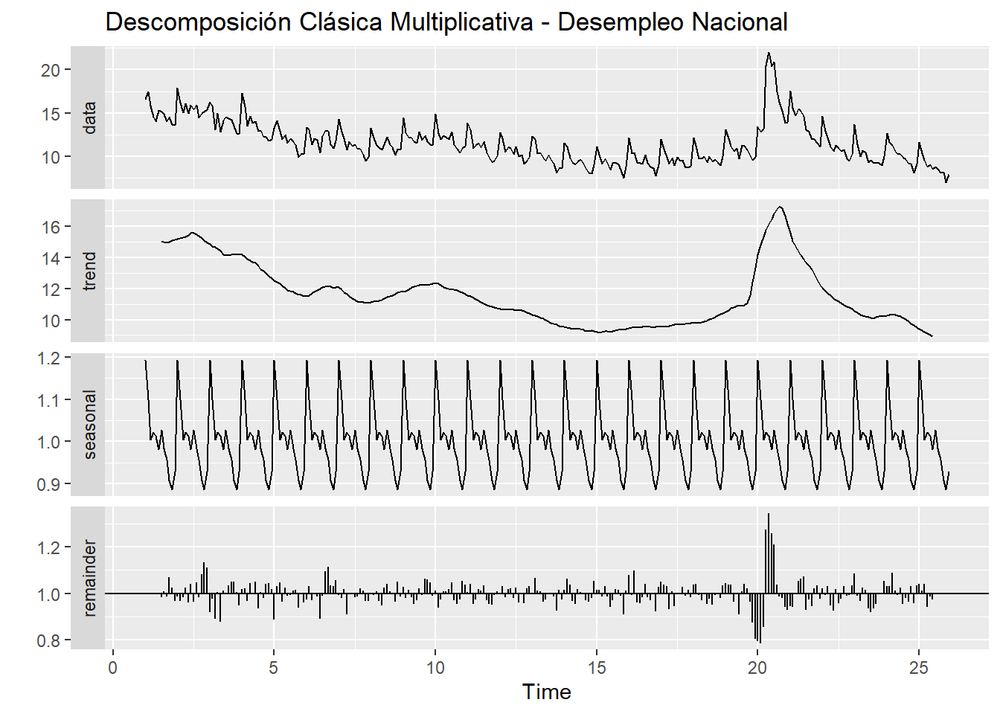
En el grafico se puede ver que la serie refleja una tendencia decreciente por un choque el cual fue del año 2020 por la pandemia, con un patron estacional claro y residuos que s ecomportan bien, excepto durante ese año. A su vez, el modelo a realizar debe contemplar la estacionalidad y considerar ese año.
- La ACF y PACF (Función de autocorrelación y la Función de autocorrelación parcial), permiten analizar la dependencia temporal de la serie, identificando patrones de autocorrelación para apoyar a la hora de realizar el modelo.
library(forecast)
library(ggplot2)
ggtsdisplay(ts_desempleo_nacional,
main = "Serie, ACF y PACF - Desempleo Nacional")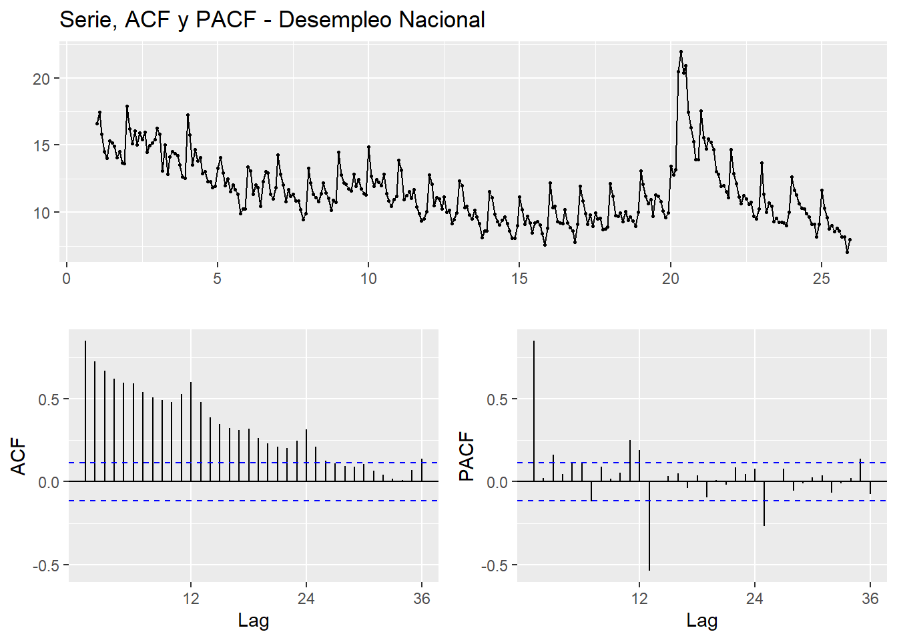
La ACF confirma la no estacionariedad. La PACF tiene una caída en el primer rezago. Esto al final nos sugiere que una vez se controle ese efecto del primer rezago, la mayor parte de la serie quedará explicada, aunque la estacionalidad sigue siendo relevante. Al final requiere una transformación, en palabras técnicas una diferenciación, lo que nos orienta a un modelo tipo ARIMA.
Como conclusion general estos resultados nos dicen que antes de realizar cualquier modelo se debe realizar una transformación.
La descomposición clásica multiplicativa, las pruebas ACF y PACF, y la prueba de Dickey-Fuller aumentada se aplicaron exclusivamente sobre la tasa de desempleo nacional debido a que esta es la variable objetivo del estudio y la única que será sometida a modelado predictivo. Adicionalmente, las correlaciones superiores a 0.94 evidenciadas entre los indicadores de área y nacional permiten anticipar que todas las series comparten una estructura temporal similar, lo que hace innecesaria su verificación individual y refuerza la decisión de centrar el análisis de estacionariedad y dependencia temporal en la variable que guía el modelado.
2.0.4 Conclusiones.
A partir del análisis exploratorio de los indicadores del mercado laboral en Colombia para el período 2001–2025, se observa que la tasa de desempleo nacional presenta un comportamiento relativamente estable durante gran parte del tiempo, con valores que se concentran principalmente entre el 8% y el 14%. Sin embargo, el análisis temporal permite identificar episodios de alta volatilidad asociados a choques económicos importantes. En particular, alrededor del año 2020 se evidencia un incremento considerable del desempleo, superando el 20%, lo cual refleja el fuerte impacto que tuvo la pandemia de COVID-19 sobre la actividad económica y el mercado laboral del país.
El análisis de la distribución de la variable objetivo mediante histogramas y diagramas de caja permitió comprender su comportamiento estadístico, evidenciando una dispersión moderada y la presencia de algunos valores atípicos. Estos valores no corresponden a errores en los datos, sino a periodos extraordinarios en la economía colombiana. Por esta razón, se decidió conservarlos dentro del análisis, ya que aportan información relevante sobre la dinámica real del mercado laboral.
Por otro lado, el análisis de las variables caracteristicas mostró que los indicadores de participación y ocupación presentan una variabilidad relativamente menor en comparación con las tasas de desempleo. Esto sugiere que, aunque el nivel de participación y ocupación de la población tiende a mantenerse dentro de ciertos rangos estables, el desempleo puede experimentar fluctuaciones más pronunciadas ante cambios en el contexto económico.
El análisis bivariado permitió identificar relaciones claras entre los indicadores del mercado laboral. En particular, se observó una fuerte relación negativa entre la tasa de desempleo y la tasa de ocupación, lo cual coincide con la lógica económica: a medida que aumenta el número de personas ocupadas, la proporción de personas desempleadas tiende a disminuir. Asimismo, la matriz de correlación evidenció una alta correspondencia entre las tasas calculadas para las principales áreas metropolitanas y las tasas a nivel nacional, indicando que los comportamientos regionales están estrechamente vinculados con la dinámica del mercado laboral del país en su conjunto.
Los gráficos de dispersión también permitieron visualizar estas relaciones de forma clara, confirmando la relación inversa entre desempleo y ocupación, así como la fuerte relación positiva entre las tasas de desempleo de área y nacional. Estos resultados sugieren que el comportamiento del desempleo en las principales áreas urbanas constituye un buen indicador del comportamiento general del mercado laboral colombiano.
En conjunto, el análisis exploratorio permitió comprender la estructura del conjunto de datos, identificar patrones relevantes, detectar valores atípicos y analizar las relaciones existentes entre los principales indicadores laborales.
2.0.5 Referencias:
Arango, L., Herrera, P., & Posada, C. (2008). Comisión Permanente de Concertación de Políticas Salariales y Laborales. Ensayos sobre Política Económica, 26(56), 204–263.
Banco de la República de Colombia. (s. f.). Series estadísticas históricas: Mercado laboral. https://www.banrep.gov.co/es/estadisticas-economicas/series-historicas/mercado-laboral
Banco de la República de Colombia. (s. f.). Series estadísticas históricas: Mercado laboral. https://uba.banrep.gov.co/htmlcommons/SeriesHistoricas/mercado-laboral.html
Departamento Administrativo Nacional de Estadística (DANE). (s. f.). Gran Encuesta Integrada de Hogares (GEIH): Empleo y desempleo – históricos. https://www.dane.gov.co/index.php/estadisticas-por-tema/mercado-laboral/empleo-y-desempleo/geih-historicos
Congreso de la República de Colombia. (1945). Ley 6 de 1945: Disposiciones sobre convenciones de trabajo, asociaciones profesionales, conflictos colectivos y jurisdicción especial de trabajo.
Departamento Administrativo Nacional de Estadística (DANE). (s. f.). Mercado laboral. https://www.dane.gov.co/index.php/estadisticas-por-tema/mercado-laboral